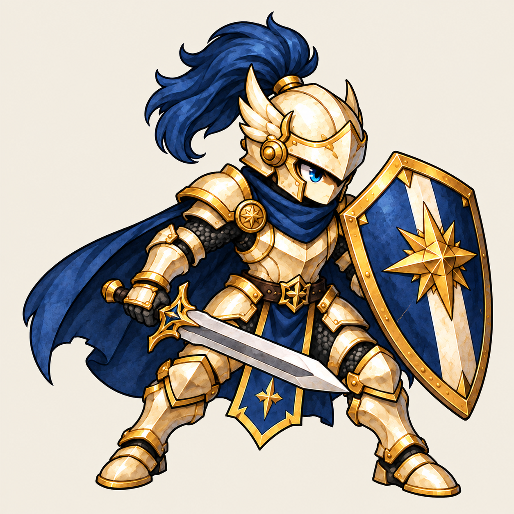
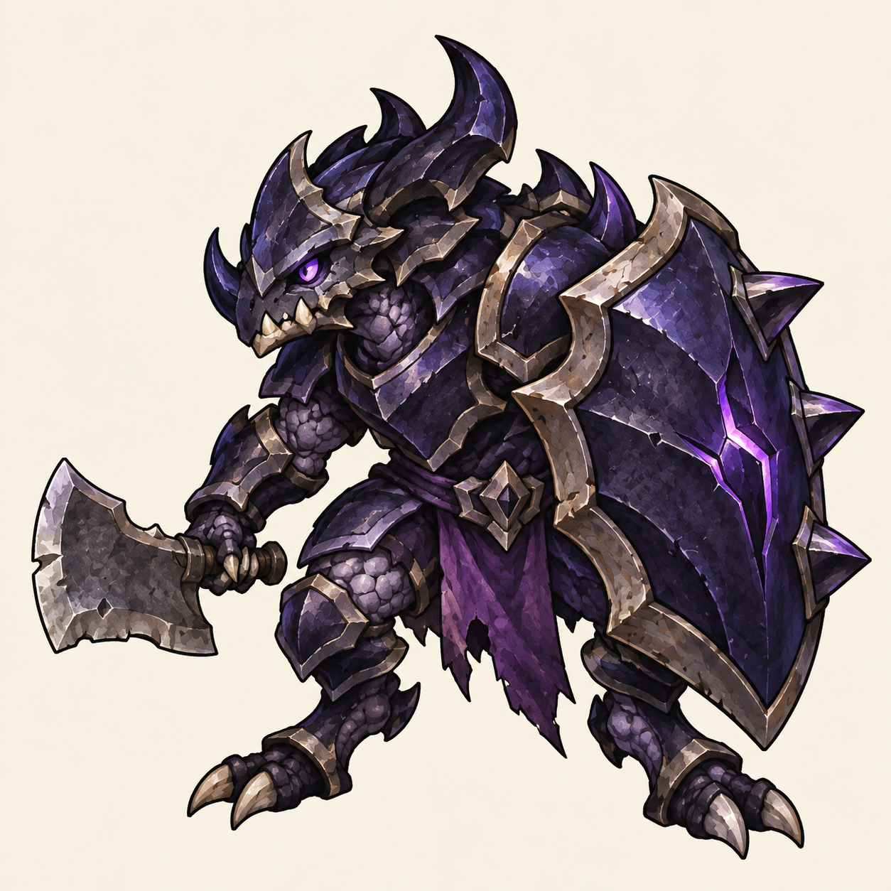
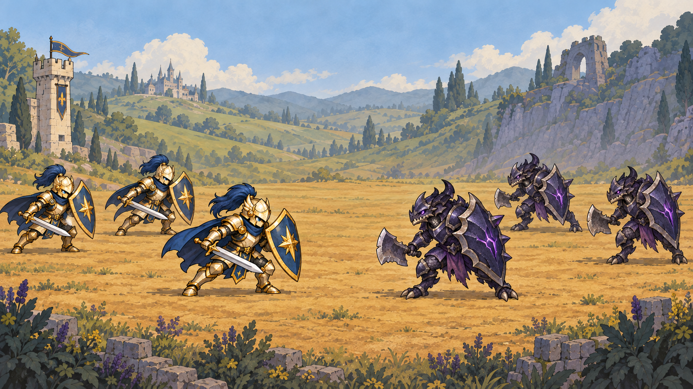

방패병 V3 · 품질 및 축소 비교
새 이미지 후보. 기존 전장 보드의 평면적 표현을 교정하는 정지 원화 검토입니다. 사용자 승인, 투명 스프라이트, 모션, 실제 게임 실행 화면이 아닙니다.

확대 보기 · 클릭하면 원본
동일 원본의 표시 크기
56px
80px
112px
56px는 현재 UnitView의 이미지 전체 높이 기준입니다. 112px는 2배 표시 참고, 80px는 비교 후보이며 게임 수치 변경이 아닙니다.
브라우저 배율 100%에서 비교하세요. 브라우저 보간과 Godot 필터는 다르므로 실제 전투 가독성 판정으로 사용하지 않습니다.
베일 방어병 · 같은 품질 방향의 비인간 후보

베일 원화 후보 · 최종 승인 전동일한 표시 높이
56px
80px
112px
아군보다 몸통이 넓지만 보스 크기로 확대하지 않습니다. 실제 충돌·점유 크기를 확정하는 자료는 아닙니다.
양 진영과 전장 · 화풍 적합성 시안

이미지 모델로 만든 비교 시안이며 실제 Godot 캡처가 아닙니다. 합성에서 장비의 세부가 달라져 원화·모션 제작 원본으로 사용하지 않습니다. 각 진영 3명, 방어탑 1개, 통로 밖 소품만 포함합니다.
단독 원화 배경은 불투명한 아이보리입니다. 크기 비교는 원본을 다시 그리거나 수정하지 않고 같은 PNG의 표시 크기만 바꿉니다. 다음 검사: 실제 전장 대비, 투명 경계, 동일 장비·발 기준의 동작 연속성.